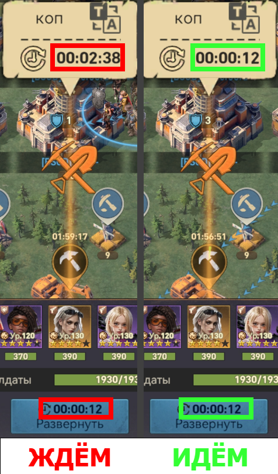
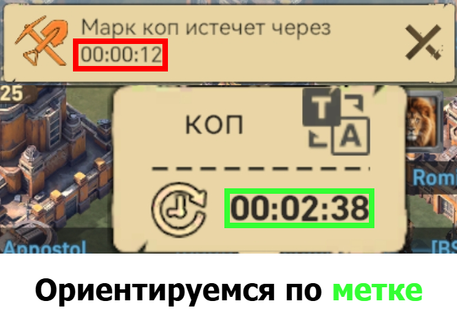

← Вернуться на главную
Порядок действий при раскопках
- Обнаруживший раскопки игрок делится их координатами в чат и начинает их.
- R4 ставят над раскопками метку.
- Ты должен выйти на раскопки так, чтобы время на метке совпадало с временем развёртывания (см. картинку). Допускается погрешность 2-3 секунды в обе стороны.

- После того как твой отряд зашёл в раскопки, дождись их окончания.
- Попробуй забрать подарок 🎁
📌 P.S. По разным причинам время на метке может отличаться от времени в уведомлении — ориентироваться необходимо на время метки (см. картинку).

🏠 На главную